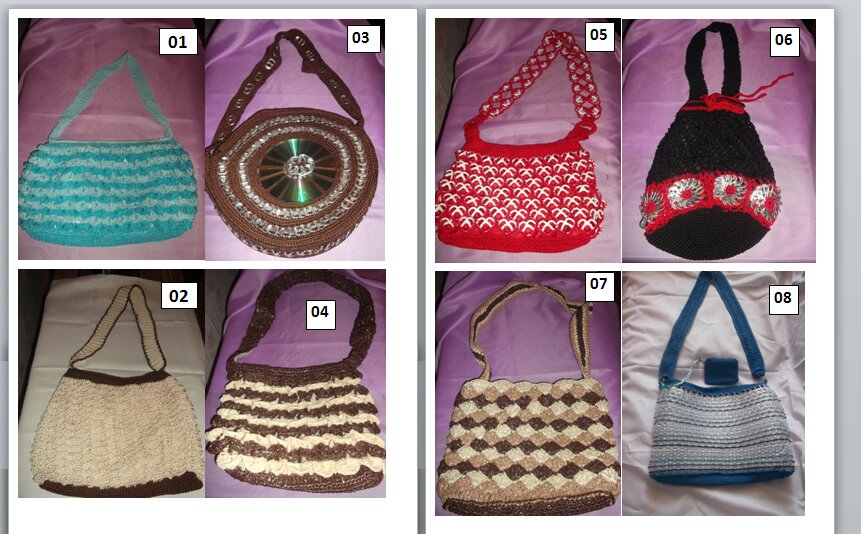

Nace en 2020 en proceso de pandemia, y por gusto al tejido y el ocio que genera, somos una micro empresa en crecimiento, desarrollando estilos de bolsas tejidas con crochet de material como nylon, rafia y trapillo. Con diferentes patrones y colores.
